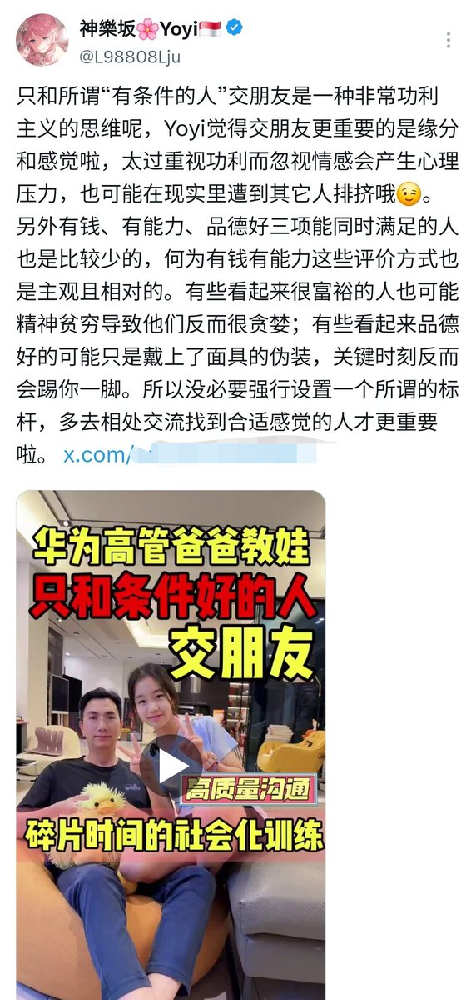

直到大地变成一颗番茄🍅
@bcfqdtfqz
@L98808Lju yori转载的这个人的立场我不喜欢，就直接用截图回复了
如果一个企业没钱只会降本增效我只会觉得一点前景都没有，
但是如果一个企业没钱的话可以考虑改善业务能力/收购企业从低估值到高估值，本身信誉没有问题的话，那我会好好考虑然后把自己的时间金钱投入进去。
对企业如此，对人更是如此。

神樂坂🌸Yoyi🇸🇬
@L98808Lju
只和所谓“有条件的人”交朋友是一种非常功利主义的思维呢，Yoyi觉得交朋友更重要的是缘分和感觉啦，太过重视功利而忽视情感会产生心理压力，也可能在现实里遭到其它人排挤哦😉。